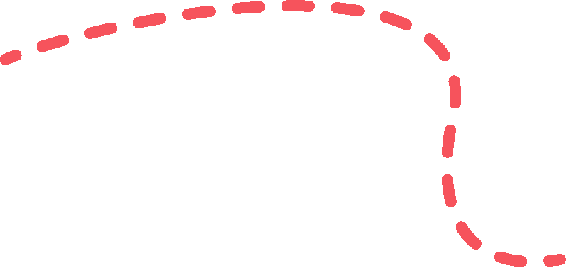

视觉组｜算法小能手

视觉组介绍
机器人赛事是一类以机器人为核心的竞赛活动，利用弹丸攻击对方机器人或对方场地道具装甲板是取得胜利的关键。因此。视觉组需要利用各类算法，开发出稳定的自动瞄准系统，以下是视觉组的主要任务。
1.自动瞄准系统的开发和升级
2.雷达系统的开发和升级
3.自动击打能量机关系统的开发
4.自定义控制器的开发
5.制导飞镖的开发
视觉组工作
视觉组负责编写视觉算法处理图像，对获取的图像进⾏处理，完成⾃瞄、机器人自主决策及雷达的开发的任务。



视觉组功能
环境感知：通过摄像头等视觉传感器获取机器人周围环境的图像信息，识别障碍物、地形特征、目标物体的位置和形状等，帮助机器人了解自身所处的环境状况，为路径规划和行动决策提供基础。
目标识别与定位：对特定目标物体进行识别和定位，比如在物流场景中识别货物、在工业生产线上识别零部件等，使机器人能够准确地执行抓取、搬运等操作。
导航辅助：为机器人导航提供视觉信息支持，通过识别路标、地图特征等，帮助机器人确定自身位置和行驶方向，实现自主导航，如自动驾驶汽车通过视觉组识别车道线、交通标志等。
1.C++、 Python 等编程语言（和计算机深入交流一下吧~）
例如嵌入式系统开发：在汽车电子、智能家居、工业控制等领域，因其能直接操作硬件、对内存进行精细管理，可用于开发底层驱动程序、实时操作系统等。
2.机器学习和人工智能（不想搞点热门的东西吗）
机器人学习是人工智能在机器人领域的具体应用和拓展，人工智能为机器人学习提供理论和技术支持，机器人学习是人工智能的一个实践方向，推动人工智能技术发展和完善。
3.超前的学科课业内容（我们会早两年使用到你们专业课的内容，帮助你预习你的课业）
4.使用学到过的课业内容（什么，线代学完就忘了？ 在这里，你将会永远记住那些已经学过的数学物理知识）在视觉组，可以帮你拾起忘记的知识和学业，在学习中变得游刃有余。
你也想让机器人拥有聪明的大脑吗，你也想自己动手做一个小机器人吗？那就快来视觉组一起学习吧！
END
推文|L结訫
图片|Ambition运营组
审核|青唐三月